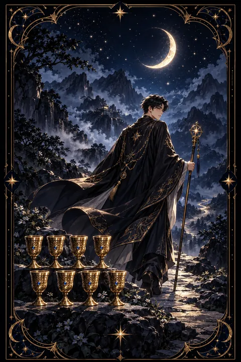

이 게시물은 쿠팡 파트너스 활동의 일환으로, 이에 따른 일정액의 수수료를 제공받습니다.


컵 8 카드 — 미련을 두고 떠나는 용기
컵 8 카드 한눈에 보기
컵 8 카드 상징 읽기

동네보살의 카드 그림은 전통 라이더–웨이트 덱의 뜻을 새 그림으로 옮긴 것입니다. 아래 상징 설명은 전통 덱의 그림을 기준으로 합니다.
붉은 망토를 두른 나그네가 지팡이에 몸을 기대고 달빛 아래 산길을 오릅니다. 등 뒤에 남겨진 여덟 개의 잔은 그동안 공들여 쌓아 온 감정과 성과를 뜻합니다.
잔은 아래에 다섯 개, 위에 세 개로 놓여 있고 그 사이에 한 칸이 비어 있습니다. 모자람 없이 보이는 삶에도 무언가 빠져 있다는 감각이 떠남의 이유임을 보여 줍니다.
하늘에는 초승달과 보름달이 겹친 얼굴의 달이 떠 있습니다. 한 주기가 끝나고 새 주기가 시작되는 전환점이자 밤에만 보이는 내면의 길을 상징합니다.
나그네가 향하는 험한 산은 쉽지 않지만 더 높은 깨달음을 향한 여정입니다. 발밑을 흐르는 물은 흘러가는 감정을 나타냅니다. 지팡이 하나만 든 가벼운 차림은 새 출발에 많은 짐이 필요하지 않다는 뜻입니다. 전체적으로 어둡고 차분한 색조는 떠남이 들뜬 도피가 아니라 조용히 내린 결심임을 드러냅니다.
컵 8 카드 정방향 뜻
정방향 컵 8은 겉으로는 안정되어 보여도 마음이 더 이상 머물지 않는 자리를 떠날 때가 왔다는 신호입니다. 오래 쌓아 온 관계나 일, 익숙한 습관이 이제는 당신을 채워 주지 못한다는 사실을 인정하는 카드입니다.
떠남은 도망이 아니라 더 깊은 의미를 찾아가는 선택입니다. 아쉬움과 허전함이 함께 오겠지만 그 감정은 올바른 방향으로 가고 있다는 증거이기도 합니다. 지금까지 들인 시간이 아까워서 머무르는 것은 이 카드가 경계하는 태도입니다.
다만 모든 것을 한 번에 끊어 낼 필요는 없습니다. 무엇이 빠져 있는지 차분히 적어 본 뒤 그 빈자리를 채울 수 있는 곳을 향해 작은 걸음부터 옮겨 보세요. 혼자 걷는 시간을 일부러 만들어 내면의 목소리를 들어 보는 것도 좋은 출발입니다. 산을 오르는 길은 느리지만 올라갈수록 시야는 넓어집니다.
컵 8 카드 역방향 뜻
역방향 컵 8은 떠나야 할 때를 알면서도 발을 떼지 못하는 상태를 보여 줍니다. 혼자가 되는 두려움이나 들인 노력이 아깝다는 미련이 발목을 잡고 있을 수 있습니다.
또 다른 해석은 방향 없는 방황입니다. 무엇을 찾는지도 모른 채 이곳저곳을 떠돌며 어느 것에도 마음을 두지 못하는 모습입니다. 반대로 한 번 떠났던 자리로 돌아와 다시 시도해 보는 흐름으로 읽기도 합니다.
어느 쪽이든 핵심은 스스로 선택하는 것입니다. 머무를 까닭과 떠날 까닭을 종이 양쪽에 써 보면 감정에 가려져 있던 답이 드러납니다. 아직 가능성이 남은 관계나 일이라면 조건을 바꿔 한 번 더 시도해 볼 수 있습니다. 마음이 이미 떠났다면 떠날 날짜를 구체적으로 정해 두는 편이 흐지부지 시간을 보내는 것보다 낫습니다.
연애에서 컵 8 카드
솔로라면 과거의 인연이나 맞지 않는 만남 방식을 정리하고 새로운 기준을 세우는 시기입니다. 늘 비슷한 사람에게 끌려 비슷한 결말을 맞았다면 그 패턴에서 걸어 나올 때입니다. 한동안 혼자 지내며 자신이 진짜 원하는 관계를 그려 보는 시간도 의미가 있습니다.
만나는 사람이 있다면 관계에 무언가 빠져 있다는 감각이 커지는 때입니다. 겉으로 문제는 없어도 대화가 줄고 설렘이 식었다면 그 허전함을 상대에게 솔직히 털어놓아 보세요. 함께 채울 수 있는 빈칸이라면 관계는 다시 깊어집니다. 서로 다른 곳을 바라보고 있다는 결론에 이른다면 억지로 붙잡기보다 각자의 길을 존중하는 선택도 성숙한 사랑의 한 모습입니다. 어느 쪽이든 서두르지 말고 충분히 대화한 뒤에 결정해도 늦지 않습니다. 혼자 있는 시간이 두렵지 않을 때 더 건강한 선택을 할 수 있습니다.
재회·속마음 질문에서 컵 8 카드
재회 질문에서 컵 8이 나오면 상대가 이미 마음을 정리하고 다른 길로 걸어가고 있을 가능성이 큽니다. 떠난 사람의 뒷모습을 그린 카드여서 당장 다시 이어지기는 쉽지 않습니다. 이럴 때는 붙잡는 연락보다 스스로의 빈자리를 먼저 돌보는 편이 좋습니다. 상대가 떠난 이유가 관계 안의 허전함이었다면 그 부분이 달라지지 않는 한 같은 결말이 반복되기 쉽습니다. 카드가 거꾸로 나왔다면 상대에게도 미련이 남아 돌아볼 여지가 있습니다. 다만 같은 이유로 다시 헤어지지 않으려면 무엇이 비어 있었는지 먼저 짚어 보아야 합니다. 시간을 두고 자신의 삶을 채워 가는 모습이 오히려 가장 설득력 있는 신호가 될 수 있습니다.
일·금전에서 컵 8 카드
일과 직장에서는 지금의 자리에서 얻을 것을 충분히 얻었다는 신호로 읽습니다. 연봉이나 조건은 나쁘지 않아도 성장이 멈췄거나 일의 의미를 느끼지 못한다면 이직이나 직무 전환을 진지하게 고민해 볼 때입니다. 떠나기 전에 다음 발판을 미리 알아보면 흔들림이 줄어듭니다.
금전 면에서는 오래 유지해 온 지출 습관이나 수입 구조를 다시 점검하는 흐름입니다. 더 이상 가치를 주지 않는 정기 결제나 모임 비용을 정리하면 여유가 생깁니다. 새 일을 시작하고 싶다면 작게 시험해 보는 것으로 출발하세요. 당장 결정을 내리기 어렵다면 석 달 정도 기한을 정해 두고 그 안에 달라지는 점을 기록해 보세요. 기록이 쌓이면 떠날지 머물지 판단이 선명해집니다.
컵 8 카드는 예일까 아니오일까
지금 쥐고 있는 것에서 등을 돌려 떠나는 카드라서 현재 상황이 그대로 이어지느냐는 질문에는 아니오에 가깝습니다. 거꾸로 뽑혔다면 한 번 더 붙잡아 볼 여지가 남아 있어 조건부로 읽기도 합니다.
자주 묻는 질문
컵 8 카드 역방향은 나쁜 뜻인가요?
역방향 컵 8은 떠나야 할 때를 알면서도 발을 떼지 못하는 상태를 보여 줍니다. 혼자가 되는 두려움이나 들인 노력이 아깝다는 미련이 발목을 잡고 있을 수 있습니다.
컵 8 카드가 연애 질문에 나오면요?
솔로라면 과거의 인연이나 맞지 않는 만남 방식을 정리하고 새로운 기준을 세우는 시기입니다. 늘 비슷한 사람에게 끌려 비슷한 결말을 맞았다면 그 패턴에서 걸어 나올 때입니다. 한동안 혼자 지내며 자신이 진짜 원하는 관계를 그려 보는 시간도 의미가 있습니다.
타로 카드는 어떻게 뽑나요?
타로 카드 페이지에서 78장을 섞으면 그중 22장이 펼쳐집니다. 마음이 가는 세 장을 고르면 과거·현재·미래 자리에 놓이고, 한 장씩 뒤집어 자리와 방향에 맞는 풀이를 읽습니다. 정방향과 역방향은 섞는 순간 정해집니다.